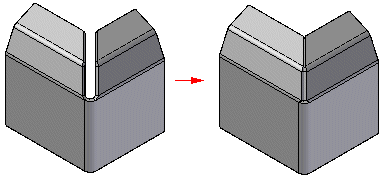
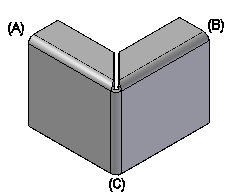

Close 3-Bend Corner command
Close 3-Bend Corner command
Closes corners that include three bends. Flange edges can equally meet, totally intersect, or intersect with circular corner relief.

When closing a 3-bend corner, you use two outer bends (A) and (B) as input. The bends must have the same bend angle, which must be less than or equal to 90 degrees, and bend radius. Their centerlines must intersect in 3-D space and they must connect through a common joining bend (C).

Note: The joining bend does not have to have the same sweep angle and bend radius as the outer bends.